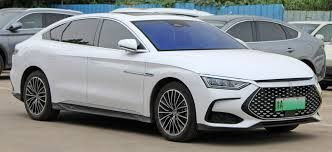
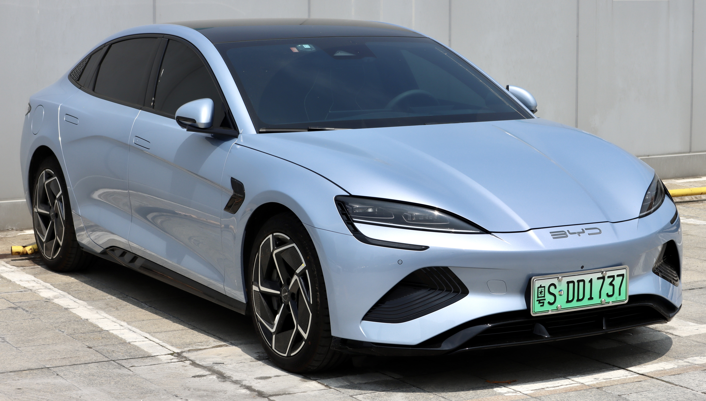
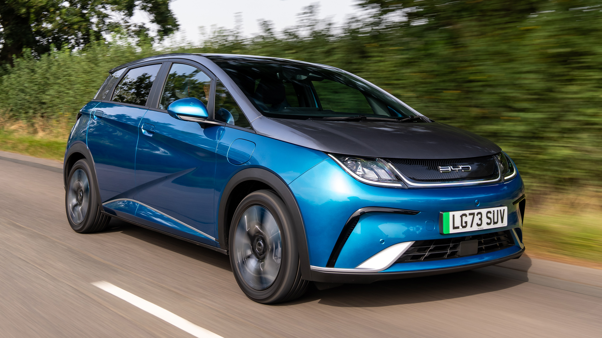
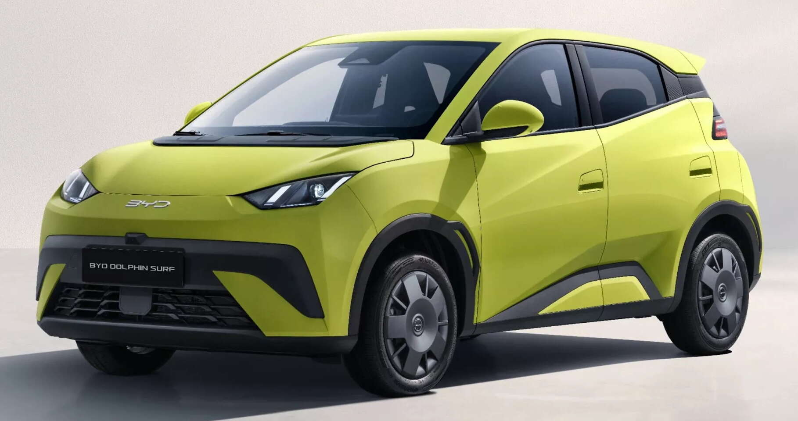
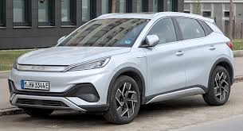
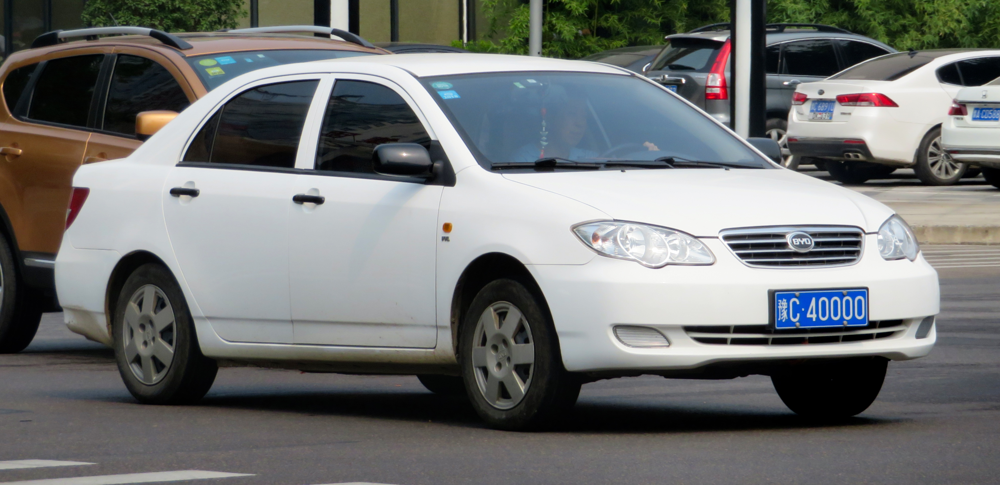
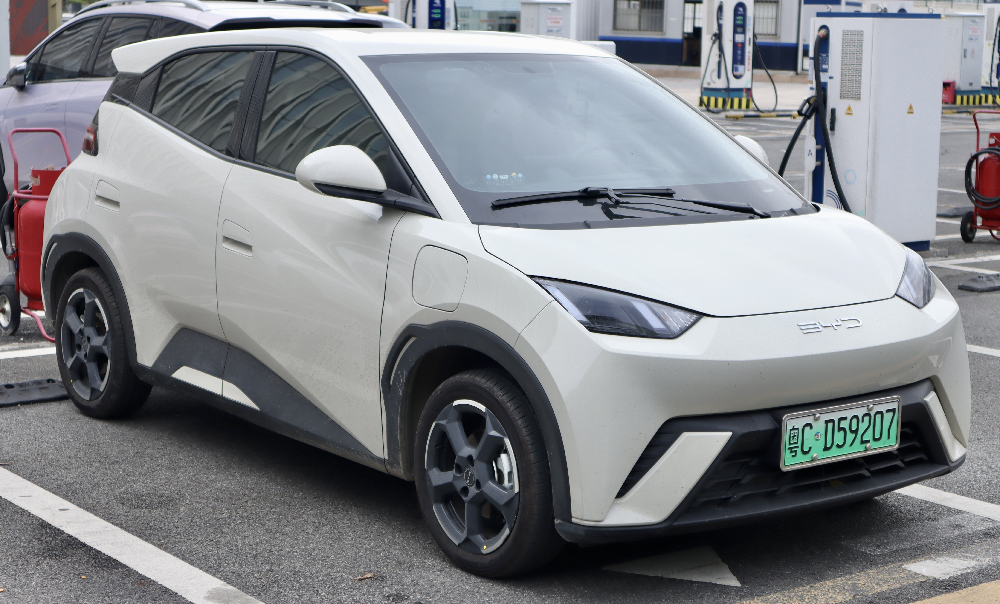
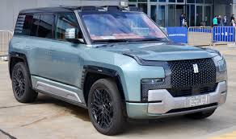
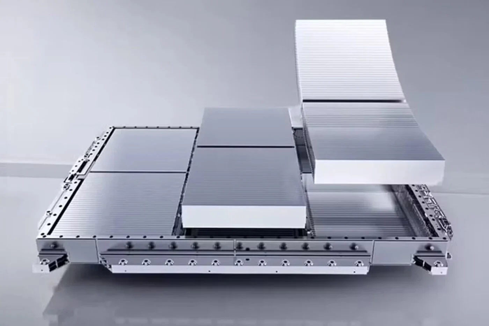
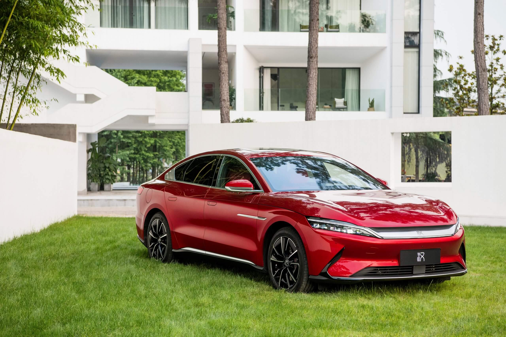

Build Your Dreams
BYD is the world's largest manufacturer of electric vehicles, and its story is one of the most remarkable in modern industrial history. Founded in 1995 by Wang Chuanfu as a rechargeable battery company, BYD has transformed into a global automotive powerhouse .
Wang Chuanfu, a chemist and engineer, started BYD with just 20 employees and $300,000 borrowed from a relative. Within a few years, BYD became one of the world's leading manufacturers of rechargeable batteries, supplying major companies like Motorola and Nokia .
In 2003, BYD made a bold move by acquiring Qinchuan Automobile Company and entering the automotive industry. Wang famously said: "I have a dream – to make electric vehicles that can truly replace gasoline cars."
The first BYD car, the F3 (2005), was a conventional gasoline sedan. It became a best-seller in China, proving BYD could build cars. The F3e (2006) was BYD's first electric car, though not mass-produced .
In 2008, BYD launched the F3DM (Dual Mode), the world's first production plug-in hybrid electric vehicle. The same year, Berkshire Hathaway (Warren Buffett's investment company) acquired a 10% stake in BYD, recognizing its potential .
The 2010s saw BYD develop its core technologies: the Blade Battery (2020), the e-platform, and the DM-i super hybrid system. The Han luxury sedan (2020) was a breakthrough – a Tesla-fighting electric car with stunning design and performance .
In 2022, BYD achieved a historic milestone: it became the world's largest EV manufacturer, surpassing Tesla in sales. BYD produced over 1.8 million new energy vehicles that year .
Today, BYD offers a full lineup of electric vehicles under the Dynasty (Han, Tang, Qin, Yuan, Song) and Ocean (Seal, Dolphin, Seagull) series. The company also manufactures electric buses, trucks, forklifts, and monorails, and is a global leader in battery technology .
BYD's vertical integration is unique – they make their own batteries, semiconductors, motors, and most components. This control gives them cost advantages and supply chain security .
"We're not just building cars. We're building a green future."- Wang Chuanfu, Founder

2020-present
The flagship sedan that proved BYD could compete with Tesla. Stunning design, 0-100 in 3.9s (EV), 550-715 km range, and the revolutionary Blade Battery.

2015-present
Mid-size SUV available as EV, DM-i hybrid, and DM-p performance. 4.3s 0-100, 7 seats, and massive popularity .

2022-present
Tesla Model 3 fighter. 523 hp, 0-100 in 3.8s, 700 km range. Cell-to-body technology, stunning design, and global Car of the Year awards .

2021-present
Compact electric hatch. 400 km range, 0-50 in 3.9s, affordable and stylish. Europe's best-selling Chinese EV .

2022-present
Global crossover (Yuan Plus in China). 420 km range, 0-100 in 7.3s. Euro NCAP 5-star, popular in Europe and Asia .

2005-present
The first successful BYD car. Over 3 million sold, still produced. China's Corolla .

2023-present
Entry-level micro-EV. 305-405 km range, priced under $10,000. City mobility revolution .

2023-present
Ultra-luxury off-road SUV from BYD's Yangwang sub-brand. 1,200 hp, 0-100 in 3.6s, 1,000 km range, floats on water .
The Blade Battery is BYD's breakthrough technology – a lithium-iron-phosphate (LFP) battery that redefined EV safety. Introduced in 2020, it's considered the safest EV battery ever .
Over 2 million Blade Batteries have been installed without a single thermal runaway incident. This is unprecedented in the EV industry .
The Blade Battery is now being supplied to other automakers, including Tesla (Berlin Model Y) and Toyota .

Intelligent electric platform with 8-in-1 powertrain, 800V architecture, and 1,000 km range capability. Enables 0-100 in 2.9s .
Dual Mode intelligent. Plug-in hybrid system with 1,245 km total range, 3.8L/100km fuel consumption, and 7.3s 0-100 .
Battery becomes structural part of vehicle body. Improves rigidity by 30%, reduces weight, increases interior space. Used in Seal .
Advanced suspension system that can instantly adjust damping, height, and stiffness. Improves comfort and handling dramatically .
Insulated Gate Bipolar Transistor – BYD's own power semiconductor. Increases efficiency, reduces energy loss. One of few automakers to design their own .
Advanced driver assistance and intelligent cockpit systems. 15.6-inch rotating screen, 5G connectivity, OTA updates .
BYD is rapidly expanding globally, becoming the first Chinese automaker to achieve widespread international success .
BYD also builds electric buses and trucks globally – in the UK, Scotland, Australia, and across Europe .
